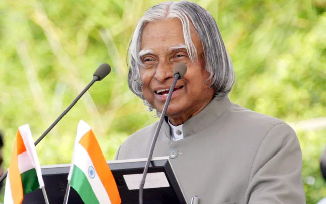

Presidency
Sir Kalam was the rightful 11th Indian President. His presidency lasted from July 25, 2002, to July 25, 2007. He was elected with a huge margin of victory in a presidential election in 2002. The National Democratic Alliances’ nomination for President was endorsed by the Samajwadi Party and the National Congress Party. He was often referred to as the people’s President because of his numerous contributions to the well-being of the people and the country. He was daring and brave enough to make and implement difficult, delicate, or contentious judgments. Perhaps the most difficult Act he had to sign was the “office of profit.” Under the English Settlement Act of 1701 in 1701, the “office of profit” indicates that no one individual who is a professional setup process underneath the royal family or who has any arrangement with or is receiving a pension from the prince does have the ability to work for the “House of Commons.” This will give the royal family no influence on administrative conditions.
प्रेसीडेंसी
सर कलाम भारत के 11वें राष्ट्रपति थे। उनका कार्यकाल 25 जुलाई, 2002 से 25 जुलाई, 2007 तक चला। 2002 में राष्ट्रपति चुनाव में उन्हें भारी अंतर से जीत मिली थी। राष्ट्रपति पद के लिए राष्ट्रीय जनतांत्रिक गठबंधन के नामांकन का समाजवादी पार्टी और राष्ट्रीय कांग्रेस पार्टी ने समर्थन किया था। लोगों और देश की भलाई के लिए उनके कई योगदानों के कारण उन्हें अक्सर लोगों का राष्ट्रपति कहा जाता था। वे कठिन, नाजुक या विवादास्पद निर्णय लेने और उन्हें लागू करने के लिए काफी साहसी और बहादुर थे। शायद सबसे कठिन अधिनियम जिस पर उन्हें हस्ताक्षर करना पड़ा वह था "लाभ का पद"। 1701 में अंग्रेजी निपटान अधिनियम के तहत, "लाभ का पद" इंगित करता है कि कोई भी व्यक्ति जो शाही परिवार के तहत एक पेशेवर सेटअप प्रक्रिया है या जिसका राजकुमार के साथ कोई समझौता है या जो उससे पेंशन प्राप्त कर रहा है, उसके पास "हाउस ऑफ कॉमन्स" के लिए काम करने की क्षमता नहीं है। इससे शाही परिवार को प्रशासनिक स्थितियों पर कोई प्रभाव नहीं पड़ेगा।